Chicken Pulao / Murg Pulao
© 2016 Spicy World, Published on: Jan 6, 2016
One of my favorite weekday's meal is 'chicken pulao', because it takes very less time to cook. The dish is super tasty but very easy. I basically don't need any sides with this pulao, it itself tastes delicious. I only love to add potatoes but if you like other veggies in your pulao, feel free to add. This is also a very good lunch box option for adults and I can guarantee you that the box will return empty everytime without a single complain. You just have to try this in your kitchen.

Ingredients
- 5-6 with bone chicken pieces.
- 1 and ½ cups of basmati rice.
- 1 potato cut into small cubes.
- 3 Teaspoons of curd.
- 1 onion thinly sliced.
- 1 Teaspoon ginger and garlic paste.
- 2-3 green chilies.
- Some cashews and raisins.
- ½ Teaspoon of turmeric powder.
- ½ Teaspoon of red chilli powder.
- 1 Teaspoon full garam masala / any pulao masala of your choice.
- Whole spices( 2 bay leaves, 4 cloves, 4 green cardamoms, 6 black pepper corns, 1 small cinnamon stick).
- Salt and sugar.
- Water.
- 4-5 Tablespoons of white oil.

Steps
Heat oil in a pan / kadai.
Fry the potato cubes for 5 minutes.
Then remove them from oil and keep aside.
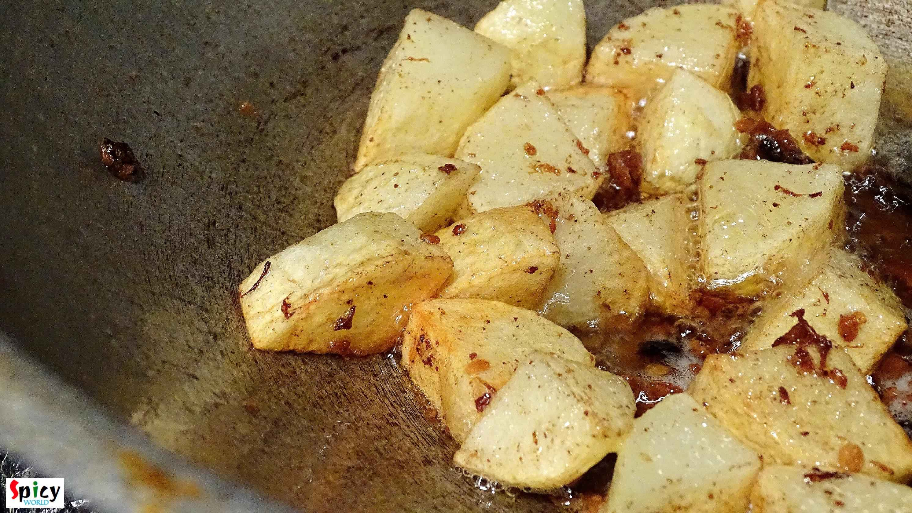
Fry the onion slices in the oil for 5-6 minutes.
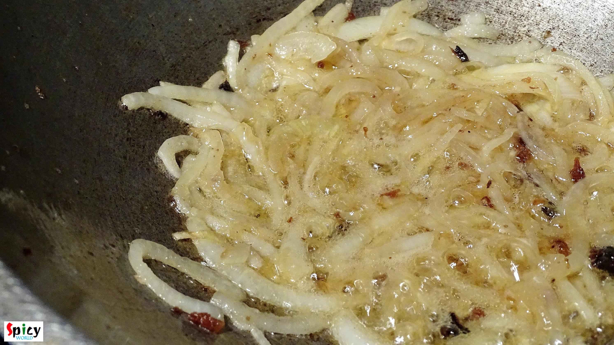
Then add chicken pieces and ginger and garlic paste. Mix it well.
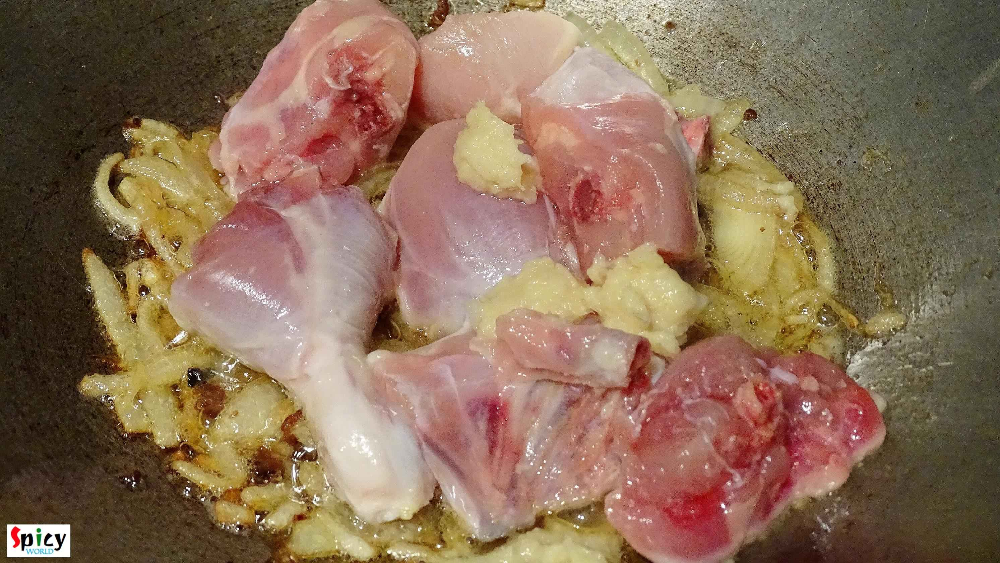
Add turmeric powder and red chilli powder. Again mix it for 5 minutes.
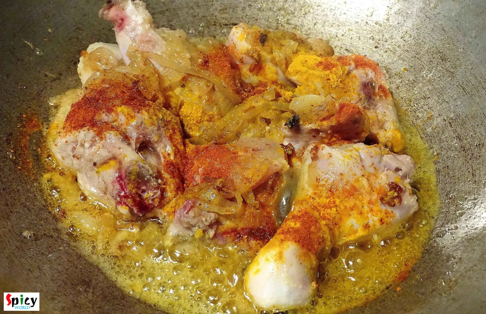
Then lower the heat and add the curd mixture, salt and pinch of sugar. Mix it very well for 7 minutes.
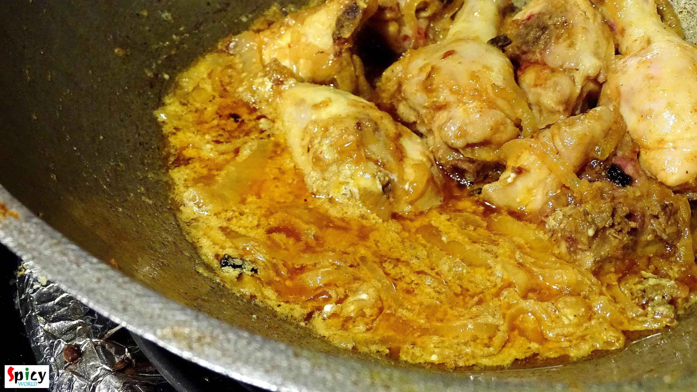
Now add garam masala or your favourite pulao masala. Cook this for another 5 minutes.
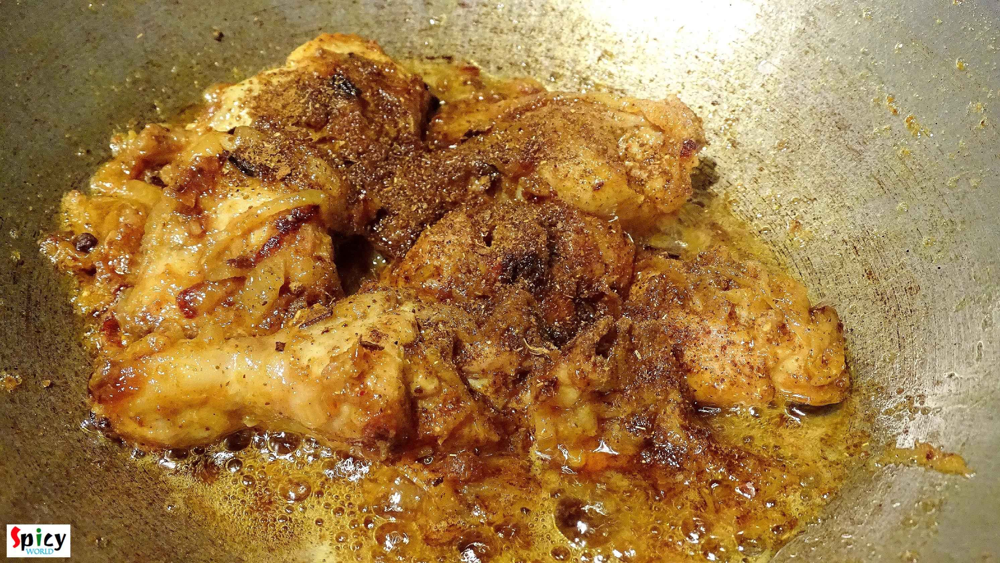
Wash the rice well with water, drain completely and add into the chicken.
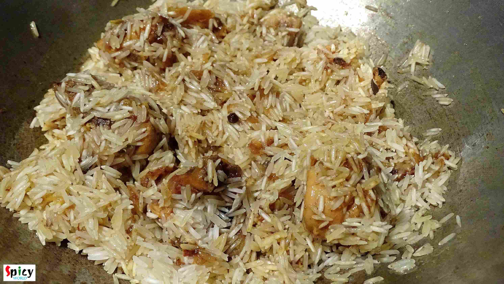
Add cashews and raisins in the rice.
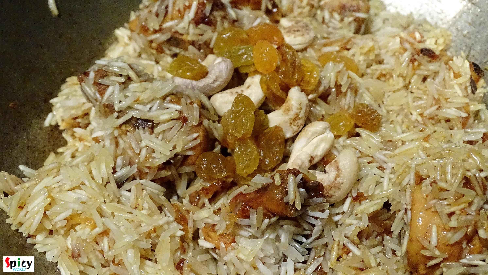
Then add all the whole spices and mix everything gently.
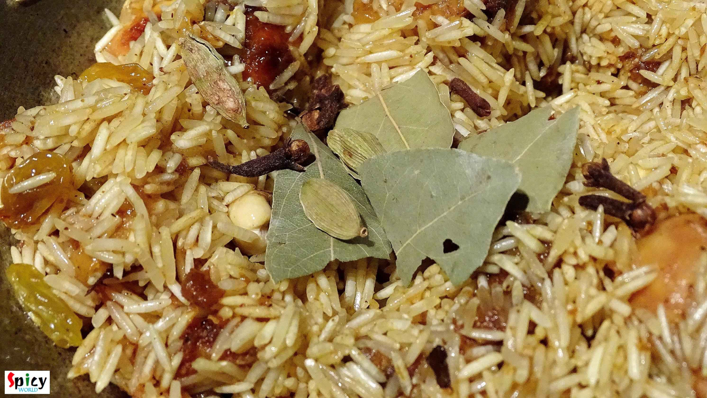
Add 3 cups of water for 1 and ½ cups of rice, green chilies and enough salt.
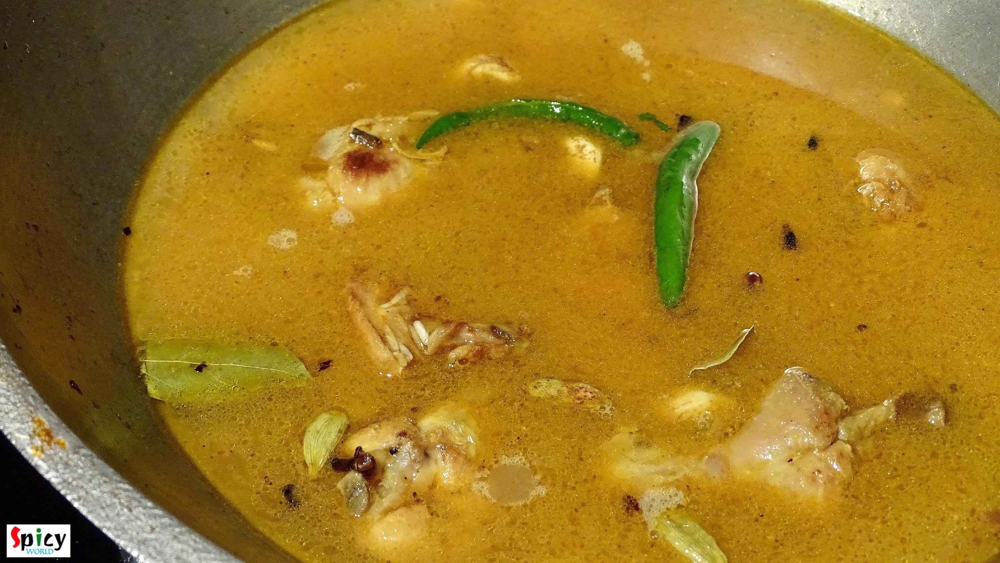
Bring the heat on high and Let the water come to a boil.
After that add those fried potato cubes.
Mix it with gentle hand.
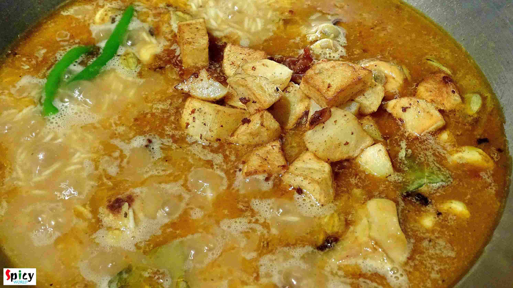
Bring the heat to low, cover the pan with a tight lid and cook for 15 minutes.
After 15 minutes the rice will look like this.
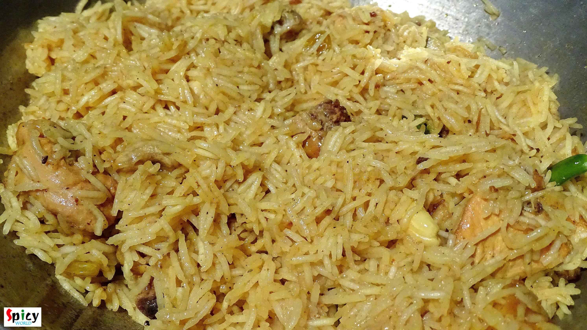
Turn off the heat and let the pulao rest with cover for another 6 minutes, then serve.
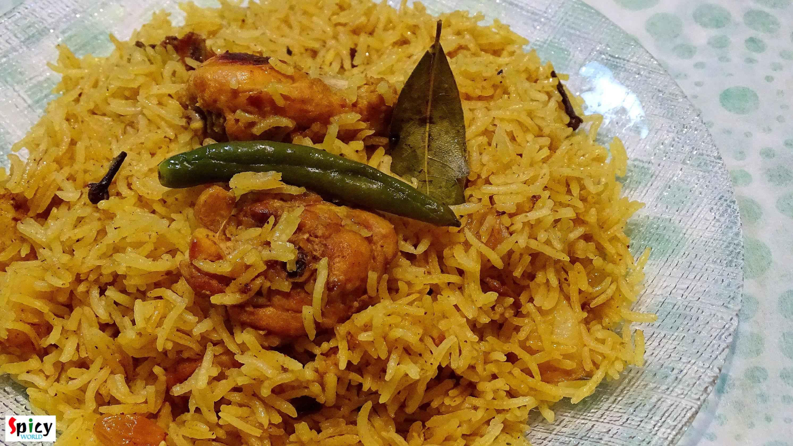
Your Chicken Pulao is ready ...
- Enjoy this hot with some chilled raita ...
")